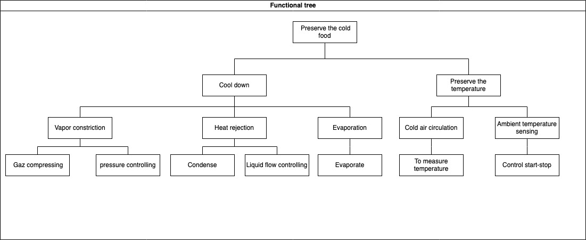

A Functional model explains what the product is made for. It is:
A description of the functions performed by a product.
An opportunity to break down a product into smaller pieces (modules) that can be more easily understood.
At the highest level of a functional breakdown (black box view), service functions are the effects (intended by its ecosystem actors) of the interaction of the product with its environment. (See actors analysis, Chapter 48).
At the intermediate and lowest levels of a functional breakdown (white box view), technical functions are input-output relationships transforming matter, energy or information flows. They are expressing in a non-solution neutral way and observable from inside the product. A set of technical functions is necessary for the realization of a service function (in contrast to solution neutral expression of the capabilities, ?sec-product-dvt–capability).
52.0.1 Why should you define functional model?
A functional model helps to break down a complicated problem into simple sub-problems.
A functional model helps to anticipate failures occurring when an intended effect of the product is no longer produced on its environment.
A function is the main input to derive the functional requirements required to define the conditions of use of the product as well as to provide objective evidences through the validation and verification activities.
52.0.2 How to document a functional model?
The documentation of technical functions, which requires adopting an internal (white box) viewpoint on the product, consists in breaking down the service function into sub-functions. The decomposition process is no more solution neutral as it requires to make a decision at every indenture level. The functional decomposition requires two modelling approaches: function tree and functional graph.
52.0.2.1 Function tree
The function tree is a top-down decomposition of function into sub-functions that helps to simplify the problem to solve.
A top-down and bottom-up reading of the functional tree provides insight on the “how” and “why”, respectively.
The decomposition process should be stopped when the technical function is sufficiently detailed to reuse, make, or buy a design solution.
Example

Image of functional tree of XYZ cargo-ADD ONS
1. What minimum documentation should the functional tree provide?
- A model specifying the kinds of technical functions and their sub-functions in the format of a tree (refer to the functional tree of XYZ Cargo-ADD ONS)
2. How to implement the functional tree?
- Use functional modeling language for representation, such as
- UML (Use Case diagram)
- SysML (Block Definition, Activity, or Internal Block diagram)
- SADT/IDEF0
- Functional flow block diagram
- Use open-source software for modeling the tree representation, such as
- Papyrus
- Modelio
- Capella
Click to see the example!
We show some kinds of functional tree of open-source projects.
The decomposition of technical functions creates a functional tree and, the technical functions are defined based on the functional requirements. Functional tree of example about the refrigerator on the ADD-ONS for food producers represented in the figure below.
Definition:The functional graph is a multi-level logical articulation of technical functions.
Comments:
Relationships between functions are in/out-going flows of matter, energy, or information.
Logical AND/OR gates can be used to define concurrent or sequential functions.
Articulation of technical function can describe as input-output relationships transforming flows by using the functional modeling language in the format of the graph
1. What minimum documentation should the functional graph provide?
- A model specifying a multi-level logic of relationships between technical functions (refer to functional graph of XYZ Cargo-ADD ONS)
2. How to implement the functional tree?
- Use functional modeling language for representation, such as
- UML (Use Case diagram)
- SysML (Block Definition, Activity, or Internal Block diagram)
- SADT/IDEF0
- Functional flow block diagram
- Use open-source software for modeling the tree representation, such as
- Papyrus
- Modelio
- Capella
Click to see the example!
52.0.4.1Example 1: Functional graph of XYZ Cargo-ADD ONS:
The image below shows the functional graph of the relationship between technical functions for maintaining food quality by ADD-ONS of XYZ cargo

{kind=link}

{kind=link}

{kind=link}

{kind=link}